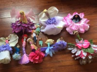
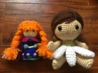
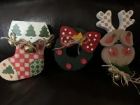

Craftin' critters club
Home
Gallery
Events
Past Events

In July we made these fun and easy bead and flower dolls

In August we learned to crochet and started making dolls

In November we tried our hand at painting a set of wooden figures
Upcoming Events
←
→